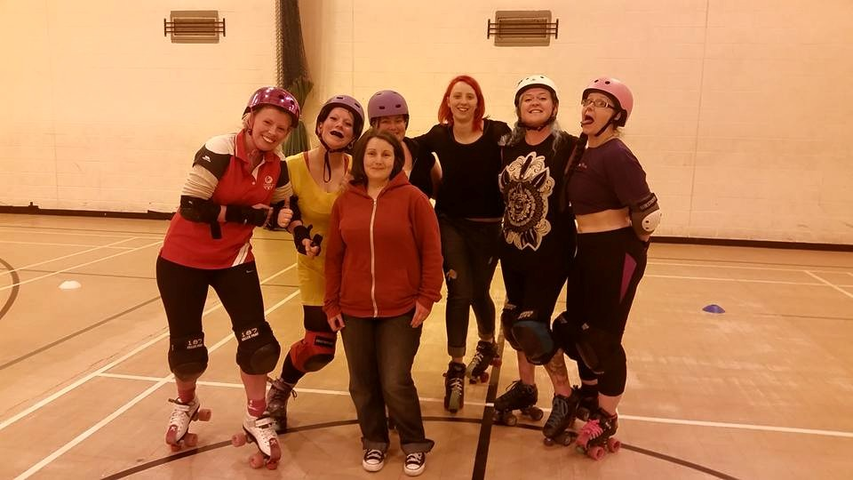

A wee chat with Wee County Roller Derby
While established teams like Auld Reekie and Glasgow Roller Derby are now mature enough to be heading off to the USA, there are also new leagues just starting up in Scotland as well. We hope to cover a little more about Scotland's newest leagues in the near future, starting with the latest addition to the sport: Clackmannanshire's Wee County Roller Derby. We talked to co-founder Melissa 'Rammy' Russell about their story since the launch in May this year.
 Wee County's first crop of newbie skaters (Rammy 3rd from right), with Voodoo's Roll-n-Pin 2nd-from-right along visiting the open session.
The appearance of Wee County Roller Derby earlier this year came as something of a surprise to most of us. To start off, can you tell us a little about yourselves, and why you founded a new league?
WeeCRD started as a little random thought bubble between myself and our other founding member as we found ourselves looking for a new team to join. There was almost too much choice in Falkirk, if that makes sense? DreadKnot is actually based in Alloa and we realised that no one else was training or representing the Wee County. A lightbulb went off in our heads immediately and we toyed with the idea of starting a Clackmannanshire based team for several months before we realised that we could actually make this dream a reality. Almost four months later and here we are!
Co-ed Derby is more popular than it used to be, but it’s far less widespread even than men’s derby, let alone women’s. Why did you choose to be a co-ed league? Are you planning on having only a co-ed roster, or also producing women’s or men’s rosters to get more bouts in (given the limited availability of co-ed teams at present)?
We chose to identify as a co-ed training team simply because we want to give everyone regardless of gender the opportunity to play roller derby. We are planning to have a co-ed roster, a men’s and a women’s roster also so that we give ourselves the option for more bouts.
The area around Stirling and Falkirk has the highest density of roller derby activity in Scotland - three women’s teams, two men’s teams, two co-ed teams and the only bouting junior derby league in Scotland in Fierce Valley Roller Cubs. Do you think that there’s something special about the area that encourages so many teams to co-exist?
We love that there are so many teams in the Forth Valley area, it means that our little community is even tighter and more connected than in other areas. There is definitely something in the water round here that makes people connect with Roller Derby on a scale unlike anywhere else we’ve seen.
Given the already packed roster in the area, are you concerned at all about competition for skaters from the more established teams?
We aren’t concerned about competition at all as we consider ourselves to be a purely Clackmannanshire based team. There are a lot of people who struggle to find time and money to be able to travel to Falkirk to train with the teams through there, whereas in the Wee County we are situated nicely for anyone in the area as well as anyone in Stirling and beyond.
Recruitment has been a gradual process so far. As we are working towards being able to host a mass recruitment we are bringing in skaters one or two at a time and so far our retention rate has been pretty high. We now have seven skaters, two of whom are fresh meat which is exciting because we get to start from the ground up to get everyone minimum skills past. Because of our connections and the nature of roller derby being such a female dominated sport we do have only female skaters at the moment. However, we do have a couple of guys trying out in the next few weeks so slowly but surely we are working to break down that gender barrier and make everyone feel welcome.
As with Fierce Valley, you seem to have been successful at getting mentions in the Alloa Advertiser, have you noticed an improved response from traditional media coverage?
The article in the Alloa Advertiser went out last week and since then we have had a lot more interest in the team on a local scale as well as giving us credibility within the roller derby community. I think some teams play it safe by sticking to just digital marketing, but with an area like Clackmannanshire it’s essential that we utilise traditional media in the same respect.
We also see you have your first fundraiser (an Acoustic Night at Peppes Bar, Alloa on the 24th of July) planned. Can you tell us a little about the line-up arranged, and where the funds will be going?
We are incredibly excited about this as it will mean that we can not only raise funds but get our name out to the local area as well. As for the line-up on the night, announcements will be made on the Wee County Roller Derby event page this week so keep an eye out!
Funds will be going towards building our fresh meat kit so that we can host mass recruitments as well as ensure that we can increase training time for the team and potentially pay for further media coverage so that we can increase awareness of Clackmannanshire’s first ever roller derby team.
Finally, can you tell us a little about your plans for the coming year?
Our main objective for the next twelve months is to get our skaters through their minimum skills as well as to be able to recruit on a larger scale so that we have a full roster to play our debut game before the year is out.
We don’t want to rush the training process just so that we can get a game done. Our main priority is to make sure everyone is the best skater they can be and feel ready to bout.
There will no doubt be more fundraisers throughout the year and perhaps some charity scrimmaging but all will be confirmed later in the year.
We will also be launching our brand new logo this month!
So….look aboot ye ;)
WeeCounty Roller Derby can be found on Facebook, Twitter and Instagram, and using the #lookabootye tag.

{kind=link}